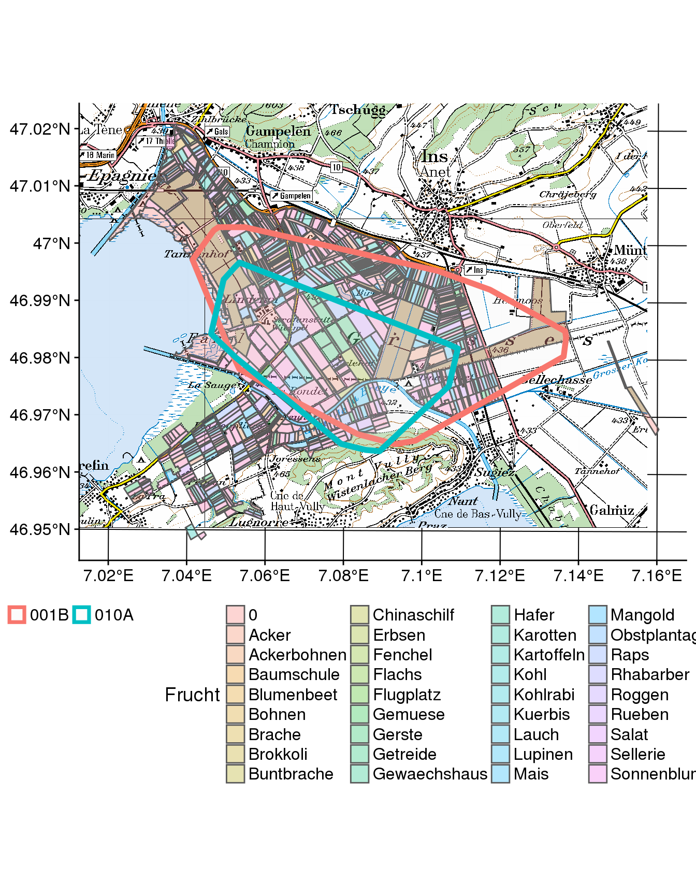

Exercise 5
Learning Outcomes
- You are able to process spatial data (vector and raster) within R, including creating simple maps within R
- You know basic operations for semantically annotating your trajectories with geographic context.
Preperation
Open your R Project from last week. Either run your own script from last week or the following lines to transform the data into the form we need for today’s exercise. Important: Reinstall the package CMAtools since we have made a few updates.
devtools::install_git("https://github.engineering.zhaw.ch/PatternsTrendsEnvironmentalData/CMAtools.git") # Reinstall this package, since we have a few updateslibrary(tidyverse)
library(CMAtools)
library(sf)
library(ggspatial)
library(raster)
# Import as tibble
wildschwein_BE <- read_delim("../CMA_FS2018_Filestorage/wildschwein_BE.csv",",")
# Convert to sf-object
wildschwein_BE = st_as_sf(wildschwein_BE, coords = c("Long", "Lat"), crs = 4326,remove = FALSE)
# transform to CH1903 LV95
wildschwein_BE <- st_transform(wildschwein_BE, 2056)
# Add geometry as E/N integer Columns
wildschwein_BE <- st_coordinates(wildschwein_BE) %>%
cbind(wildschwein_BE,.) %>%
rename(E = X) %>%
rename(N = Y)
# Compute timelag, steplength and speed
wildschwein_BE <- wildschwein_BE %>%
group_by(TierID) %>%
mutate(
timelag = as.numeric(difftime(lead(DatetimeUTC),DatetimeUTC,units = "secs")),
steplength = euclid(lead(E, 1),lead(N, 1),E,N),
speed = steplength/timelag
)Tasks
Tasks 1: Import and visualize spatial data
- Import the vector dataset
Feldaufnahmen_Fanel_2016.shpfrom moodle withread_sf()and save it to the variablefanel2016. The file .shp stands for Shapefile, which is a simple format for spatial vector data (points, line, or polygons). This shapefile contains vector data about cultivated crops in the study area. - Transform the coordinates to
CH1903+ LV95. - Filter the dataset
wildschwein_BEto the period 01.04.2016 to 30.09.2016 and store the data in a new variable (wildschwein_BE_2016). - Create a minimum convex polygon for each individual in
wildschwein_BE_2016and store it in a new variable (mcp2016) - Import the raster data file
pk100_BE_2056.tif. PK stands for Pixel-Karte. - Create a map with the layers
pk100_BE_2056.tif,fanel2016andmcp2016.

Task 2: Annotate Trajectories from vector data
Now we would like to know what crop was most visited by our wild boar, and at what time. To this end, use st_join() to attach the attributes from fanel2016 to your trajectory data wildschwein_BE_2016 (semantic annotation). Visualize the number of sample points in each category of Frucht over the course of the filtered time period.
Figure 14: The number of samples per category per week from April to September 2014.
Task 3: Explore annotated trajectories
Think of other ways you could visually explore the spatio-temporal patterns of wild boar in relation to the crops.
Ideas:
- For example, in the visualisation above, we did not account for the different availability of the different crops. Potatoes (“Kartoffeln”) are seemingly not visited at all, while Rapeseed (“Raps”) has high visitation from Mai to June. Maybe this is due to the fact that there are mostly Rapeseed fields and basically no Potatoe Fields. How could you consider availability in the visulisation?
- Expore Circadian rhythm / daily patterns of crop visitations
Task 4: Annotate Trajectories from raster data
In terms of raster data, we have prepared a Normalised Digital Surface Model (nDSM)7, which provides information on the height of topological features on the ground. Since our wild boar usually use natural landscapes, the nDSM is a good approximation of vegitation height. This nDSM is available on moodle (nDSM.tif). Import this data with raster()and attach the respective raster values to the point data in your sf object (wildschwein_BE_2016). Explore the dataset similar to the crop data in task 2/3. Explore again spatio-temporal relations!
Figure 15: An example of a temporal exploration of the data obtained from the nDSM.
Solutions
Preperation
## devtools::install_git("https://github.engineering.zhaw.ch/PatternsTrendsEnvironmentalData/CMAtools.git") # Reinstall this package, since we have a few updates
library(tidyverse)
library(CMAtools)
library(sf)
library(ggspatial)
library(raster)
# Import as tibble
wildschwein_BE <- read_delim("../CMA_FS2018_Filestorage/wildschwein_BE.csv",",")
# Convert to sf-object
wildschwein_BE = st_as_sf(wildschwein_BE, coords = c("Long", "Lat"), crs = 4326,remove = FALSE)
# transform to CH1903 LV95
wildschwein_BE <- st_transform(wildschwein_BE, 2056)
# Add geometry as E/N integer Columns
wildschwein_BE <- st_coordinates(wildschwein_BE) %>%
cbind(wildschwein_BE,.) %>%
rename(E = X) %>%
rename(N = Y)
# Compute timelag, steplength and speed
wildschwein_BE <- wildschwein_BE %>%
group_by(TierID) %>%
mutate(
timelag = as.numeric(difftime(lead(DatetimeUTC),DatetimeUTC,units = "secs")),
steplength = euclid(lead(E, 1),lead(N, 1),E,N),
speed = steplength/timelag
)Task 1
library(lubridate)
fanel2016 <- read_sf("../CMA_FS2018_Filestorage/Kulturen/Feldaufnahmen_Fanel_2016.shp") %>%
st_transform(2056)
pk100_BE <- brick("../CMA_FS2018_Filestorage/pk100_BE_2056.tif")
wildschwein_BE_2016 <- wildschwein_BE %>%
filter(DatetimeUTC >= as.Date("2016-04-01")) %>%
filter(DatetimeUTC <= as.Date("2016-09-30"))
mcp2016 <- wildschwein_BE_2016 %>%
group_by(TierID) %>%
summarise() %>%
st_convex_hull()
ggplot(fanel2016, aes(fill = Frucht)) +
annotation_spraster(pk100_BE) +
geom_sf(alpha = 0.3) +
geom_sf(data = mcp2016, aes(colour = TierID), inherit.aes = F, alpha = 0.1,lwd = 2) +
theme(legend.position = "bottom")
Task 2
wildschwein_BE_2016 <- wildschwein_BE_2016 %>%
st_join(dplyr::select(fanel2016,Frucht))
frucht_remove <- c("0","Flugplatz","Rhabarber","Zucchetti")
wildschwein_BE_2016 %>%
as.data.frame() %>%
mutate(week = floor_date(DatetimeUTC,"weeks")) %>%
group_by(week,Frucht) %>%
summarise(n = n()) %>%
filter(!Frucht %in% frucht_remove) %>%
filter(Frucht != "NA") %>%
ggplot(aes(week,n, group = Frucht)) +
geom_line() +
labs(x = "Time",y = "Number of Samples") +
facet_wrap(~Frucht) +
theme_minimal()Task 4
ndsm <- raster("../CMA_FS2018_Filestorage/nDSM.tif")
wildschwein_BE_2016 <- wildschwein_BE_2016 %>%
mutate(dod = raster::extract(ndsm,.))
wildschwein_BE_2016 %>%
as.data.frame() %>%
mutate(
hour = hour(round_date(DatetimeUTC,"1 hours"))
) %>%
group_by(TierID,hour) %>%
summarise(
mean = mean(dod,na.rm = T),
sd = sd(dod,na.rm = T),
up = mean+sd,
do = mean-sd
) %>%
ggplot(aes(x = hour,y = mean,ymin = do, ymax = up, colour = TierID,fill = TierID)) +
geom_ribbon(alpha = 0.4) +
geom_line() +
labs(x = "nDSM",title = "nDSM values as an approximation for vegitation hight",subtitle = "The line represents the mean nDSM value and the ribbon one standard deviation") +
theme_minimal()
The nDSM was created by calculating the difference between the digital surface models (DSM) and the digital terrain model (DTM) obtained from the geoportal from the canton Bern.↩